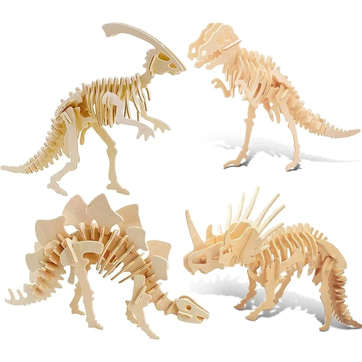
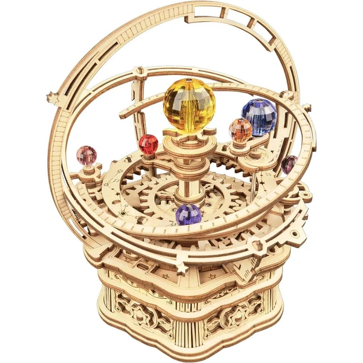

✨ Guía especial
Los mejores puzzles 3D de madera: guía de compra 2026
Por qué elegirlos, para niños y adultos, y según nivel de dificultad
Por qué elegirlos, para niños y adultos, y según nivel de dificultad
Los puzzles 3D de madera son, dentro de todo el universo de los rompecabezas tridimensionales, los más versátiles y también los más populares: sus piezas de madera contrachapada o MDF, cortadas con precisión láser, encajan a presión sin necesidad de pegamento ni herramientas. Los hay desde modelos muy sencillos pensados para los primeros puzzles de un niño hasta réplicas de cientos de piezas para adultos coleccionistas.
En esta guía te ayudamos a encontrar el modelo adecuado según la edad de quien lo vaya a montar y el nivel de dificultad que busques, con nuestras recomendaciones de compra en cada tramo.
Frente a otros materiales como el metal o el plástico, la madera ofrece un equilibrio que explica por qué es, con diferencia, el material más popular dentro de los puzzles 3D. Es más resistente que el cristal o la espuma rígida —aguanta mejor un montaje fallido o una caída sin romperse—, tiene un tacto y un acabado más agradable que el plástico, y al encajar a presión no necesita pegamento: se puede montar, desmontar y volver a montar sin que la pieza pierda ajuste, algo que no siempre ocurre con otros materiales.
Es también el material con más variedad de catálogo: desde figuras pequeñas de animales hasta maquetas grandes de monumentos o vehículos, la mayoría de fabricantes ofrecen versión en madera de casi cualquier temática. Si quieres ver el resto de materiales disponibles y en qué se diferencian, lo cubrimos en la guía general de puzzles 3D.
Para los primeros puzzles 3D, la madera es también el material más recomendable: es resistente a un montaje torpe, no tiene piezas afiladas como el metal, y las figuras suelen tener pocas piezas de tamaño grande, fáciles de sujetar por manos pequeñas.
Los modelos más habituales en esta categoría son figuras de animales y dinosaurios, con estructuras sencillas de entre 10 y 40 piezas que un niño de 4 a 7 años puede montar con poca o ninguna ayuda de un adulto. Más allá del juego, tienen un componente educativo real: trabajan la motricidad fina y el reconocimiento de formas, y son un buen punto de partida antes de pasar a modelos más complejos.
Puedes ver el catálogo completo en nuestra guía de puzzles 3D de animales y dinosaurios.

Dinosaurios Ver en Amazon →En el otro extremo, los puzzles 3D de madera para adultos apuestan por mucha más complejidad: cientos de piezas, mayor nivel de detalle en el acabado y, en muchos casos, mecanismos internos que hacen que la figura terminada tenga alguna función —ruedas que giran, engranajes que se mueven o incluso pequeños motores, como los que ofrecen marcas especializadas en este segmento.
Aquí el atractivo no es solo el resultado final, sino el propio proceso de montaje: piezas numeradas, instrucciones detalladas y un tiempo de montaje que puede ir de varias horas a varios días en los modelos más ambiciosos. Es también donde se concentra buena parte del regalo "para quien ya lo tiene todo" —monumentos grandes, vehículos con mecanismo y maquetas de estadios entran en este perfil de dificultad.

Noche Estrellada Ver en Amazon →El dato que más debería pesar en la decisión de compra, más incluso que la temática, es el número de piezas: es el indicador más fiable de cuánto tiempo y paciencia va a requerir el montaje, y el que mejor predice si el regalo va a acertar o va a acabar frustrando a quien lo reciba.
De 10 a 40 piezas (nivel iniciación): ideal desde los 4-5 años. Montaje de pocos minutos, piezas grandes y de fácil manejo. Es el rango de la mayoría de figuras de animales y dinosaurios.
De 40 a 150 piezas (nivel intermedio): a partir de los 8 años. Empiezan a aparecer estructuras con más de una pieza por nivel y algo de detalle en el acabado — la mayoría de licencias y monumentos pequeños se mueven en este rango.
De 150 a 500 piezas (nivel avanzado): adolescentes y adultos con experiencia previa. Piezas más pequeñas, montaje de varias horas, mayor riesgo de frustración si es la primera vez que se monta uno de estos.
Más de 500 piezas (nivel experto): exclusivamente adultos. Réplicas grandes de monumentos, estadios o vehículos con mecanismo, con tiempos de montaje que pueden extenderse varios días.
Como orientación rápida: si no conoces el nivel de experiencia de quien va a recibir el regalo, es preferible quedarse un escalón por debajo que uno por encima — se puede volver a comprar un modelo más difícil, pero un puzzle abandonado a medias por excesiva dificultad no genera una buena experiencia con el producto.
Este apartado responde a una necesidad distinta a todo lo anterior: no es alguien decidiendo qué comprar, sino alguien que ya tiene el puzzle en las manos y se ha quedado atascado a mitad de montaje. Merece su propio espacio porque, aunque no genera venta directa, sí genera confianza y visitas recurrentes — y es contenido que muy pocas fichas de producto de Amazon o de las propias marcas cubren bien.
Lo habitual es que cada fabricante incluya una hoja de instrucciones numerada dentro de la caja, pero si se ha perdido o el modelo es antiguo, la mayoría de marcas (Ravensburger, CubicFun, Robotime) publican los manuales en PDF descargable en su web oficial, buscando el modelo por su referencia o número de catálogo. Para los puzzles sin marca reconocible o de fabricantes más pequeños, suele ser más rápido buscar directamente el nombre del modelo en YouTube: es habitual encontrar vídeos de montaje paso a paso de la mayoría de figuras con cierto volumen de ventas.
Los modelos más sencillos, de 10 a 40 piezas grandes, están pensados desde los 4-5 años. Para los de dificultad intermedia (40-150 piezas) conviene esperar a partir de los 8 años, y los modelos avanzados de más de 150 piezas son ya cosa de adolescentes y adultos.
Sí, en general. La madera aguanta mejor un montaje fallido o una caída sin romperse, y al encajar a presión se puede desmontar y volver a montar sin perder ajuste — algo que no siempre ocurre con el metal, más rígido y propenso a doblarse.
La mayoría de fabricantes (Ravensburger, CubicFun, Robotime) publican los manuales en PDF en su web oficial buscando el modelo por referencia. Si no lo encuentras, buscar el nombre exacto del modelo en YouTube suele dar con algún vídeo de montaje paso a paso.
Entre 10 y 40 piezas es el rango recomendado para empezar — piezas grandes, montaje de pocos minutos y baja probabilidad de frustración.
Todos los tipos, materiales, marcas y modelos según la edad.